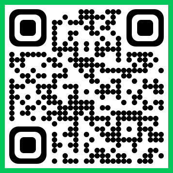

📱 핸드폰으로 접속해요

핸드폰이 꺼졌으면 다시 찍고, 같은 반·학번·이름으로 들어오세요. 점수는 그대로 이어져요.
① 순천만 줌아웃
🌾 순천만은 어떤 곳일까?
🌊
동천·이사천의 민물과 바닷물이 만나는 하구 갯벌
📏
갯벌 약 22.6㎢, 갈대 군락 약 5.4㎢
🏅
2006년 국내 연안습지 최초 람사르 습지
2021년 '한국의 갯벌'로 유네스코 세계자연유산
2021년 '한국의 갯벌'로 유네스코 세계자연유산
🔍 오늘은 카메라를 짱뚱어 한 마리에서 시작해 순천만 전체까지 줌아웃 해 볼게요!
① 순천만 줌아웃
🔍 개체 → 개체군 → 군집 → 생태계
개체: 짱뚱어 한 마리
1
개체
생물 하나하나 — 짱뚱어 한 마리
2
개체군
같은 종의 개체 무리 — 순천만의 짱뚱어 무리
3
군집
일정한 지역에 사는 모든 개체군의 무리 — 짱뚱어·칠게·갈대·도요새…
4
생태계
군집의 생물이 주변 환경(빛·물·온도·토양·공기)과 영향을 주고받으며 살아가는 체계
줌인하면 거꾸로! 생태계 ⊃ 군집 ⊃ 개체군 ⊃ 개체
→ 생태계 = 생물요소 + 비생물요소
→ 생태계 = 생물요소 + 비생물요소
① 순천만 줌아웃
🧩 순천만 생태계의 구성요소
🌱 생물요소
🌾
생산자
빛에너지로 광합성을 하여 양분(유기물)을 만든다.
갈대칠면초퉁퉁마디(함초)갯벌 표면의 규조류식물플랑크톤
🦀
소비자
다른 생물을 먹어 양분을 얻는다.
짱뚱어칠게농게꼬막도요새저어새흑두루미수달삵
🦠
분해자
죽은 생물과 배설물을 분해해 양분을 얻고, 무기물로 되돌린다.
갯벌 속 세균곰팡이
💡 갯지렁이와 게는 유기물 찌꺼기를 먹어 분해를 돕지만, 교과서 기준 분해자는 세균과 곰팡이예요. 갯벌이 갈색으로 보이는 이유 중 하나는 표면의 규조류!
🌤️ 비생물요소 (환경)
☀️빛
썰물 때 드러난 갯벌에서 규조류가 광합성
🌊물
하루 두 번 밀물·썰물로 갯벌이 잠기고 드러남
🌡️온도
계절에 따라 크게 변함
🟫토양
고운 진흙이 쌓인 펄갯벌, 강 쪽과 바다 쪽의 염분이 다름
💨공기
산소·이산화 탄소
② 상호작용
🔄 생태계 구성요소는 서로 영향을 주고받는다
①환경이 생물의 생활 방식·서식 장소에 영향 → 생물은 환경에 적응
②생물도 환경을 바꾼다 (예: 식물의 광합성 → 공기 중 산소 증가)
③생물끼리도 먹고 먹히거나 경쟁하며 영향을 주고받는다
한쪽 방향이 아니라 모든 구성요소가 서로 → 상호작용
② 상호작용
① 비생물요소 → 생물요소 순천만에서 찾기
토양 (염분)
🌾 강 쪽
염분 낮음
염분 낮음
→
🌿 바다 쪽
염분 높음
염분 높음
강 쪽에는 갈대, 바다 쪽에는 칠면초가 많다.
온도
짱뚱어의 겨울잠
추워지면 갯벌 구멍 속에서 겨울잠을 자고 봄에 나온다.
온도
흑두루미의 겨울나기
번식지(러시아·중국 북부)가 얼어붙는 겨울에 순천만으로 내려온다.
물 (밀물·썰물)
농게·칠게의 하루
썰물 때 구멍에서 나와 먹이를 먹고, 밀물 때 구멍으로 들어간다.
② 상호작용
② 생물요소 → 비생물요소
갈대→물 · 토양
갈대가 순천만을 바꾼다
질소·인 같은 오염물질을 흡수해 물을 깨끗하게 하고, 흙을 붙잡아 퇴적물이 쌓이게 한다.
게 · 갯지렁이→토양 · 공기
갯벌에 숨구멍을 뚫는다
갯벌에 구멍을 뚫어 갯벌 속까지 산소를 공급한다.
생물은 환경에 적응하기만 하는 게 아니라, 환경을 바꾸기도 해요!
② 상호작용
③ 생물요소 ↔ 생물요소
먹고 먹힘
칠게를 노리는 새들
알락꼬리마도요, 검은머리갈매기가 칠게를 잡아먹는다.
경쟁
같은 먹이를 두고
여러 도요새가 같은 게·갯지렁이를 두고 경쟁한다.
🔭 줌아웃 정리
개체 → 개체군 → 군집 → 생태계
그 안의 모든 구성요소가 서로 영향을 주고받는다 = 상호작용
개체 → 개체군 → 군집 → 생태계
그 안의 모든 구성요소가 서로 영향을 주고받는다 = 상호작용
🎮 퀴즈 1 시작!
📱 핸드폰을 준비하세요
📱 핸드폰을 준비하세요
③ 먹이 관계
🔗 순천만의 먹이사슬
🟤 규조류➜🐟 짱뚱어➜🐦 저어새
🟤 규조류·유기물➜🦀 칠게➜🐦 알락꼬리마도요
🟢 식물플랑크톤➜🐚 꼬막➜🧑 사람
🌾 볍씨 (논에 떨어진 낟알)➜🐦 흑두루미⭐ 흑두루미는 1차 소비자!
➜
화살표는 먹히는 쪽 → 먹는 쪽
에너지가 이동하는 방향
에너지가 이동하는 방향
💡 짱뚱어는 물고기지만 갯벌 표면의 규조류를 긁어 먹는 1차 소비자예요.
그런데 칠게를 먹는 새는 알락꼬리마도요만일까? → 사슬이 얽히면 먹이그물
③ 먹이 관계
🕸️ 순천만의 먹이그물 생물을 눌러 보세요
먹는 것먹히는 곳분해
👆
생물을 누르면 먹는 것과 먹히는 곳이 표시돼요.
칠게가 줄어도 도요새는 갯지렁이를 먹을 수 있다
→ 먹이그물이 복잡할수록(종다양성이 높을수록) 생태계가 안정적
→ 먹이그물이 복잡할수록(종다양성이 높을수록) 생태계가 안정적
⚠️ 흑두루미처럼 한두 곳의 월동지에 몰린 종은 질병·먹이 부족 같은 한 가지 변화에도 크게 흔들린다.
③ 먹이 관계
🔺 생태피라미드 단계를 눌러 보세요
최종
2차 소비자
1차 소비자
생산자
👆 단계를 누르면 순천만 생물이 나타나요.
⚡
에너지는 한 단계 올라갈 때마다 일부(약 10%)만 전달된다.
나머지는 호흡(열)으로 쓰이거나 사체·배설물로 빠져나간다.
나머지는 호흡(열)으로 쓰이거나 사체·배설물로 빠져나간다.
그래서 상위 단계로 갈수록 개체 수·생물량·에너지양이 줄어 피라미드 모양!
🤔 흑두루미는 8천 마리 넘게 오는데, 삵은 왜 몇 마리밖에 없을까?
→ 흑두루미는 1차 소비자라서 쓸 수 있는 에너지가 많기 때문
🤔 갯벌의 규조류가 사라지면 저어새는 어떻게 될까?
→ 짱뚱어와 게가 줄어 저어새도 줄어든다.
④ 생태계평형
⚖️ 흔들려도 다시 돌아온다
가정 상황 · 막대 길이 = 개체수
알락꼬리마도요2차 소비자
칠게1차 소비자
규조류생산자
⚖️
생태계평형: 생물의 종류, 개체수, 에너지의 이동이 안정적으로 유지되는 상태
❶ 칠게(1차 소비자)가 일시적으로 증가
❷ 칠게를 먹는 알락꼬리마도요는 증가, 칠게가 먹는 규조류는 감소
❸ 먹이는 줄고 천적은 늘어 칠게가 감소
❹ 알락꼬리마도요는 감소, 규조류는 다시 증가
✅ 원래 상태로 회복! 먹이 관계가 잘 짜여 있기 때문
④ 생태계평형
🧑🤝🧑 사람의 선택이 평형을 바꾼다
1990년대
동천 하구 골재(모래) 채취 계획 → 갯벌 흙(비생물요소)이 바뀌면 생물 전체가 영향을 받음
1996~98
시민 반대와 1996년 생태조사 → 1998년 허가 취소
2009년
흑두루미 먹이터(논)의 전봇대 약 280개 제거, 친환경 농법
⚠️ 회복 능력을 넘어설 만큼 평형이 깨지면 생태계 스스로는 쉽게 회복하기 어렵다 → 사람의 활동은 신중하게!
🐦 순천만을 찾은 흑두루미 (언론 보도 기준)
0
1996~97년
0
2025년 (최대)
🎮 퀴즈 2 시작!